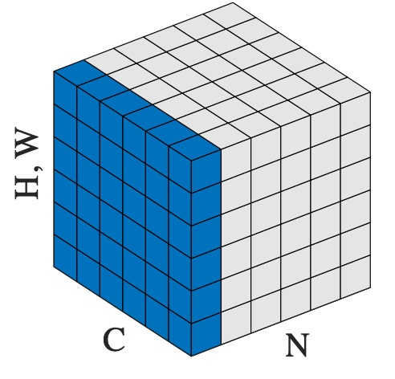

Layer Norm和Batch Norm的原理与区别
Batch Normalization 和 Layer Normalization的推导与Pytorch实现。
一、Batch Norm
- 可以使学习快速进行 —— 增大学习率
- 不那么依赖初始值
- 抑制过拟合（降低对Dropout的依赖）
思路：调整各层激活值的分布，使其拥有适当的广度。
流程：以学习时的mini-batch为单位，对每个特征在这个mini-batch的维度上进行正则化，使数据分布的均值为0，方差为1。
Pytorch:BN2d
$$
\begin{align}
\mu_B &\leftarrow \frac{1}{m} \sum_{i=1}^{m} x_i \
\sigma_B^2 &\leftarrow \frac{1}{m} \sum_{i=1}^{m} (x_i - \mu_B)^2 \
\hat{x}_i &\leftarrow \frac{x_i - \mu_B}{\sqrt{\sigma_B^2 + \varepsilon}}
\end{align}
$$
- $B = {x_1,x_2,…,x_m}$
- $\mu_B$ ：均值
- $\sigma_B^2$:方差
BN层会对均值0方差1的数据${\hat{x}_1,\hat{x}_2,…,\hat{x}_m}$ 进行缩放和平移变换：
$$ y_i \leftarrow \gamma \hat{x}_i + \beta $$
- $\gamma$ 和$\beta$是初始值为1和0的参数，然后会通过学习调整到合适的值。
1 | import torch |
二、Layer Norm
Layer Normalization (Layer Norm) 是一种深度学习中的归一化技术，用于对神经网络层中的神经元激活值进行标准化处理。它的主要作用是通过减小训练过程中不同层之间的激活值变化来加速模型训练，并改善模型的收敛性。
具体定义：
Layer Norm 的核心思想是在一个神经网络层的每一个输入样本上，对该层所有神经元的激活值进行归一化处理，而不是像 Batch Normalization (批归一化) 那样在整个 mini-batch 上进行归一化。
粗暴地理解：单个样本的所有通道上进行归一化
计算过程：
Layer Norm 对输入样本 $x=(x_1,x_2,…,x_n)$ 进行以下操作：
-
计算均值：计算输入的均值 $\mu$
$μ=\frac{1}{n} \sum_{i=1}^{n} x_i$ -
计算方差：计算输入的方差$\sigma^2$
$σ2=1n∑i=1n(x_i−μ)2\sigma^2 = \frac{1}{n} \sum_{i=1}^{n} (x_i - \mu)^2$ -
标准化：对输入进行标准化，生成归一化输出 $\hat{x}_i$
$x^i=xi−μσ2+ϵ\hat{x}_i = \frac{x_i - \mu}{\sqrt{\sigma^2 + \epsilon}}$
其中 $\epsilon$ 是一个很小的正数，用于防止除零。
-
缩放和平移：在标准化之后，Layer Norm 会引入两个可学习参数：缩放参数 $\gamma$ 和平移参数 $\beta$，用于恢复网络的表达能力：
$yi=γx^i+βy_i = \gamma \hat{x}_i + \beta$
三、与 Batch Norm 的区别
- 归一化维度不同：Batch Norm 是在 mini-batch 的维度上对不同样本的激活值进行归一化，而 Layer Norm 是在样本的每一层神经元的维度上进行归一化。
- 应用场景不同：Batch Norm 主要用于 CNNs 等具有批处理特性的网络，而 Layer Norm 更适合于 RNNs（循环神经网络）和 Transformer 等序列模型，因为序列模型的输入长度各异，且批归一化在时间步长上会导致不稳定。
总结：*
Layer Norm 的主要优点是：
- 加速收敛：通过归一化激活值，减少了梯度的波动，帮助网络更快收敛。
- 稳定训练：在序列模型（如 RNN 或 Transformer）中表现得特别好，因为它不依赖于 batch 维度，且适应于任意长度的输入。
Layer Norm 在 NLP 中的 Transformer 结构中被广泛使用，是自然语言处理任务中的常见技巧。
如果是图像中，假设一个样本shape = (C=3,H=32,W=32),那么LN会将这$3\times 32\times 32$作为一个整体计算均值和标准差，再进行归一化。

1 | import torch |
参数含义：
dim：指定在张量的哪些维度上进行计算。例如，dim=(0, 2, 3)就是对 batch、height、width 维度进行计算，通常在 CNN 中用于特征图的归一化。keepdim：决定是否保留计算后的维度。如果keepdim=True，则计算出的维度将保持原有的形状，但数值会被压缩为单个值（例如，变为 1）；如果keepdim=False，则这些维度会被移除。
Layer Norm和Batch Norm的原理与区别
https://zhouwentong7.github.io/2025/05/06/Layer-Norm和Batch-Norm的原理与区别/